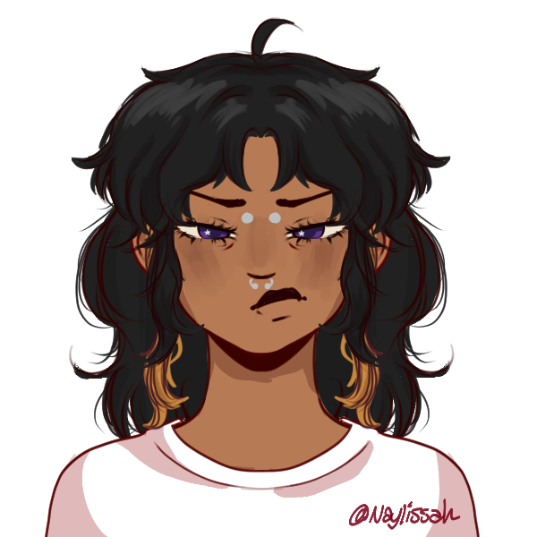

A Luz Que Me Cega

Não sei bem o que você espera ouvir de diferente de mim, tipo, a gente quase morreu e é isso a história.
Mas já que você insiste, o que mais me marcou naquela merda foi acordar com os destroços em cima de mim. Eu ouvi pessoas tossindo, outras gritando e eu só queria achar um momento de silêncio. Olhando pro lado eu vi o corpo de Agatha com a cabeça esmagada e tentei levantar pra ajudar ela. Mas era demais pra mim.
Eu não sentia muito além do sangue escorrendo pelas pernas e, principalmente, raiva. Muita raiva.
Sentia raiva porque eu não conseguia sair dali sozinhe. Sentia raiva porque eu não poderia ajudar ninguém. Sentia raiva enquanto eu via toda a minha vida passar na minha frente como uma espiral…
Mas a raiva é meu combustível. É o fogo que me deu forças pra sair daqueles escombros mesmo que me arrastando e cheie de sangue. É a energia que produz a luz que me cega.
EU fui quem levantou dali.
Sol utiliza apenas pronomes neutros, costuma ser vista como uma pessoa explosiva e um tanto insensível.
Em seus ombros elu detém o peso de proteger a si e as outras personalidades, tendo medo de que não possam se defender sozinhes.
Sol e Céu tem uma certa antipatia por discordarem profundamente da forma a qual deveria agir em relação às pessoas de fora. Porém, Sol é neutre em relação a Lua e nutre um sentimento de proteção quanto ao Mar.